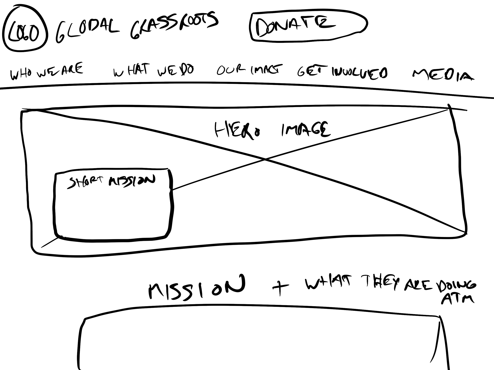

To validate our assumptions, we conducted 8 user interviews and sent out an 8- question survey to approximately 15 participants to try to learn what motivates users to donate to non-profit organizations and what turns them off from donating.
Definiton
Key Takeaways

We synthesized this data into a User Persona and then defined a user insight.
“Users need to help non-profit organizations because they want to make a difference in the world.
During our user interviews and surveys, we discovered that a majority of users help large, well-known organizations.
Therefore, we believe that grassroots organizations aren’t getting as many volunteers and donations and that we might be able to help if we instilled trust in our users through our website’s design.
We might do this by being very transparent about what our mission is and how our funds are being allocated. Doing this will allow our product to attract users to help our cause.”
Analysis


Global Grassroots accepts donations of certain used items but that information is not immediately availble to a user. Additionally, the donation form is long and clunky.
We Decided To Prioritize:

Ideation
We began our Ideation phase by creating a new user flow for the donation process.


.jpg)

Prototyping
We took our favorite aspects of each other’s paper wireframes, and created a mid-fidelity prototype.


Testing
Our user testing showed a few flaws:
- We were missing headers between different sections of the landing page
- “Our Wishlist” was buried in our “Take Action” page and “What we do” dropdown
- Our “exit” button on our donate pop-up did not work properly
Design Thinking
With this feedback, we iterated on our wireframes and created a high-fi prototype version 1 using a style guide that we created.

For reference, here is the style tile that influenced our style guide.
- We were influenced by the bright, vibrant colors of the Ugandan & Rwandan cultures
- We wanted to use a lot of pictures of local women this organization helps to evoke emotion out of our users
- We went with Montserrat and Roboto typography because they are both sans-serif fonts that are modern, clean and simple yet trustworthy and known
Our High-Fi V1 Prototype was mostly orange but for Version 2 we changed to this blue hue. Orange was not as accessible and it could read as alarming while blue is more calming. We did decide to keep our buttons orange in order to draw the users attention to them and to have them engage with the website.
Final Prototype

Takeaways
We made large improvements to the current website’s UI design and user flow for their donation process. If time wasn’t a limiting factor we would want to user test our final prototype yet again with our latest iterations that we made based on our final round of usability testing. And of course, we would love to conduct A/B testing with the current website to see if our design changes were worth the time and effort we put into it.
Unfortunately, though we reached out to stakeholders at Global Grassroots we are still waiting to formally hear back from them so we would love to know if our hypothesized problem statement was a valid one and then test our new design to see if donations increase.